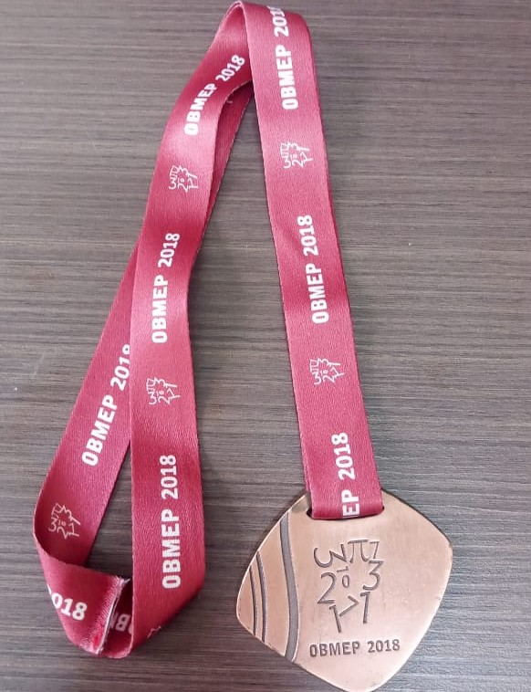

Sobre
Oi eu sou o Pedro, com um nome tão simples como esse é imposível ter um apelido, então todo mundo me chama e Pedro mesmo, sou introvertido e timido gosto de jogar videogame principalmente RPGs, jogos de plataformas, metroidevanias e beat 'em up, basicamente jogos de luta.
meus gostos poder ser chamados de estranhos escuto todo tipo de música, mas minha banda favorita é Gorillaz, minhas cores favoritas são roxo e preto, além disso adoro pessoas que entendem o meu humor ácido.
tenho 4 irmãos mas somente dois moram comigo, juntamente com a minha mãe e padrasto. as vezes eu e meu irmão vamos para casa da nossa avó e la encontramos todos os nosos irmãos, primos e tios
Estudei em muitas escolas, mas as mais marcantes foram o SESC, onde comprei um livro gigantesco que guardo ate hoje no meu armario. Ele é enorme em formato de castelo que é composto por muitas releituras das histórias clássicas de contos de fadas.
Também estudei no GEC o meu fundamental 2 inteiro, lá fiz muitos amigos e conquistei duas medalhas, uma na OBMP e outra na ONHB, elas são muito importantes para mim, pós são uma representação do esforço que coloquei para conquista-las.
E atulamente estou na EAgro, e estou gostando mais do que imaginava, fiz muitos amigos novos e estou trabalhando em um projeto com o professor Jorge Cremontti como meu supervisor.